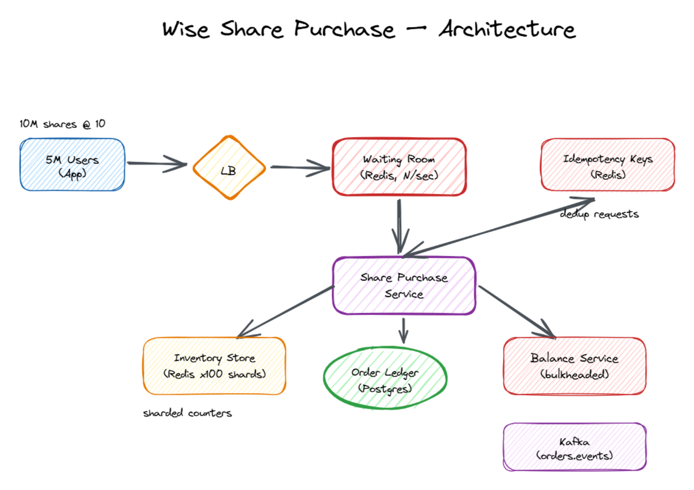

Sell 10M shares at £10 to 5M concurrent users in a 1-week window — without bringing down the Balance Service the rest of the company depends on.
Wise wants to raise £100 million by selling 10 million shares at £10 each (fixed). Customers log into the app, see the offer, and buy N shares using funds in their Wise account. Sale is open for 1 week. We expect 5 million concurrent users. The Balance Service (source of truth for everyone's account funds) is shared with the rest of the company — payments, withdrawals, transfers — and must not be degraded by this event.
This isn't a "scale to 5M users" question. The interviewer is testing:
Concurrent users: 5,000,000 Shares to sell: 10,000,000 Avg purchase per user: 2 shares (so ~5M completed orders fit the supply) Peak buy attempts/sec (first minute when sale opens): - Assume 30% of users try in first 5 minutes - 5M × 0.30 / 300 sec ≈ 5,000 buy attempts/sec Read traffic (showing "shares left" + user balance): - 5M users polling every 5s = 1,000,000 QPS reads - Mostly served from CDN + cache Balance Service writes during sale: - 5,000 debit/sec (small relative to its normal load — but the spike is what kills it) Data volume: - 5M completed orders × 1 KB = 5 GB of order records - 10M ledger entries (share-side) × 200 B = 2 GB
So the system handles ~5k writes/sec at peak, but the danger is concentrated at second 0 of the sale.
CDN (read-only display of "shares left", price)
│
┌────────────────────┴───────────────────────┐
│ │
User app ──► API Gateway ──► Waiting-Room Queue (Redis)
│ admits N/sec
▼
┌───────────────────┐
│ Share Purchase │ (the new service)
│ Service │
└───┬─────────────┬─┘
│ │
┌──────────┘ └──────────────┐
▼ ▼
┌─────────────────┐ ┌──────────────────────┐
│ Inventory Store │ │ Balance-Adapter │
│ (Redis cluster) │ │ (dedicated pool + │
│ shares_left │ │ read-replica for │
│ sharded × 100 │ │ this service ONLY) │
└─────────────────┘ └──────────┬───────────┘
│
▼
┌─────────────────────────────┐
│ Balance Service (shared) │
│ - Payments use it │
│ - Withdrawals use it │
│ - Bulkheaded from us │
└─────────────────────────────┘
│
▼
┌─────────────────────────────┐
│ Order Ledger (Postgres) │ + Kafka(orders.events)
│ user_id, shares, status, │
│ idempotency_key │
└─────────────────────────────┘

⬇ Download Interactive Diagram (.excalidraw) ↗ Open in Excalidraw
Key idea: we never let raw user traffic hammer the Balance Service directly. Everything goes through our service, which throttles and uses a dedicated connection pool.
We need to decrement shares_left for 5M people without ever going below zero. Three options:
| Option | How | Verdict |
|---|---|---|
Postgres row + SELECT … FOR UPDATE | Lock the inventory row, decrement, commit | ❌ One row, 5k writes/sec → lock queue explodes. Latency spikes to seconds. |
Redis DECRBY | Single-threaded atomic decrement | ✅ Single Redis can do 100k+ ops/sec. But still a single hot key. |
| Sharded Redis counters | Split 10M shares across 100 counters of 100k each; client picks a random shard | ✅✅ This is the answer. 100 counters × 10k ops/sec each = 1M ops/sec headroom. |
Sharded inventory:
Redis keys: inventory:shard:0 = 100,000
inventory:shard:1 = 100,000
...
inventory:shard:99 = 100,000 (total = 10,000,000)
Buy flow:
1. Pick a random shard (or hash by userId for stickiness).
2. DECRBY inventory:shard:k N (atomic; returns the new value).
3. If result < 0 → INCRBY back; try next shard (up to 3 retries).
4. After 3 fails → return "sold out" to user.
DECRBY is atomic. The trick is that we INCRBY back if we go negative. The window where a value briefly goes to -3 is invisible to other clients because the next operation on that key is serialized.The Balance Service is shared. Payments, withdrawals, transfers all use it. If 5k QPS of share-purchase debits floods it, the rest of Wise goes down — and that's catastrophic.
"Bulkhead" comes from shipbuilding: walls inside a ship that prevent one flooded compartment from sinking the whole vessel.
Balance Service (deployed once, shared) ├── Connection pool A (payments) — 200 conns ├── Connection pool B (withdrawals) — 200 conns ├── Connection pool C (share-purchase) — 50 conns ◄── HARD CAP └── Read-replica R1 — share-purchase reads ONLY
We can't run a real distributed transaction across Redis (inventory) and Balance Service (funds). Instead, we use a saga: a sequence of local transactions with compensating actions on failure.
┌─────────┐ ┌──────────────┐
│ User │ │ Balance Svc │
└────┬────┘ └──────┬───────┘
│ │
│ 1. POST /buy {shares:5, idemKey:abc} │
│ ─────────────► Share Purchase Service │
│ │
│ 2. RESERVE inventory (DECRBY redis) ────────────► │
│ │
│ 3. RESERVE funds (Balance.reserve(£50,abc)) ► │
│ │
│ 4. APPEND order(status=PENDING) to ledger │
│ │
│ 5. COMMIT funds (Balance.commit(abc)) ► │
│ │
│ 6. APPEND order(status=COMMITTED) to ledger │
│ │
│ ◄──── 7. 200 OK {shares:5, status:COMMITTED} │
└───────── ┘
| Fails at step | Action |
|---|---|
| 2. Inventory reserve | Nothing to undo. Return "sold out". |
| 3. Funds reserve | INCRBY shares back to inventory. Return "insufficient funds". |
| 5. Funds commit (rare — network blip) | Retry. Idempotency key makes it safe. If still fails, mark order REVIEW and alert. |
Networks fail. Users click the buy button twice. Mobile retries hidden inside the OS happen. Without idempotency, we'd debit someone twice and oversell shares.
Idempotency-Key: abc-123.(idemKey → order_id, status) in Postgres with a unique index.reserve() and commit() — so a retried commit doesn't double-debit.x = 5 is idempotent; x = x + 1 is not.The moment the sale opens, 5M users hit "buy" within seconds. If we let them all through, three bad things happen:
1. User clicks "Buy".
2. They get a token + position in a Redis sorted set:
ZADD wait_queue {timestamp_with_jitter} {userId}
3. Their browser polls /position every 5s and shows: "You are #4,231,109 in line. Est. wait: 12 min."
4. A leaky-bucket admitter pulls N users/sec off the front:
- rate is set so that downstream (inventory + balance) is at 60% capacity
- typical rate: 2,000 admits/sec
5. Admitted user gets a signed short-lived token → uses it to call /buy.
6. After 10 minutes of inactivity → kicked out.
| Failure | Impact | Mitigation |
|---|---|---|
| Redis inventory shard dies | 1% of inventory inaccessible | RF=3 with sentinel/cluster; auto-failover <5s. Lost inventory recoverable from order ledger (replay). |
| Balance Service unreachable | No new purchases | Circuit breaker; users see "try again in 30s"; the sale clock pauses (regulator-friendly). |
| Order Ledger DB primary fails | No new orders recorded | Synchronous replica + Postgres failover. ~30s of pending orders replayed from Kafka. |
| Saga crashes mid-flow (between reserve and commit) | Funds held but no shares | Saga orchestrator reads "in-flight" sagas from ledger on restart and replays compensation or commit. |
| Network blip retries → double commit attempt | Could double-debit | Idempotency keys; Balance Service rejects duplicates. |
| Waiting-room Redis dies | Lose queue positions (terrible UX) | Redis AOF persistence + replica. Worst case: degrade to "fair coin flip" admit until restored. |
| One whale buys with botnet | Unfair allocation | Per-user cap + velocity checks + manual review queue for outliers. |
| Regulatory halt | Need to freeze sale instantly | Kill switch flips a flag read on every request; admitter and saga both refuse new starts. |
| Layer | Size | Why |
|---|---|---|
| CDN | Global | Serves "shares left" and static UI; offloads ~1M QPS of reads |
| API Gateway / Waiting Room | ~50 pods | Admits ~2k users/sec into the buy flow |
| Share Purchase Service | ~30 pods | ~5k buy/sec at peak, plus retries/idempotency lookups |
| Inventory (Redis Cluster) | 100 shards × 3 replicas = 300 nodes | Sharded counters absorb the write spike with headroom |
| Waiting-Room Redis | ~10 shards | 5M ZADD entries; admit-rate logic |
| Balance-Adapter | Capped 50 connections, 5k QPS rate limiter | Bulkhead — physically can't overload Balance Service |
| Order Ledger (Postgres) | Sharded by userId; 16 shards; sync replica each | ~5k writes/sec + idempotency lookups |
| Kafka (orders.events) | ~10 brokers | Downstream: reporting, audit, regulator feeds |
DECRBY is atomic; if a shard goes negative I INCRBY back and try another. 1M ops/sec headroom.A table where rows are only inserted, never updated or deleted. Great for auditability — history can't be rewritten.
"Message will arrive — possibly more than once." Pair with idempotency to get "effectively exactly once."
Isolate resources per caller so one runaway client can't starve the others. From shipbuilding.
Wrapper that detects when a downstream is sick and stops calling it for a cooldown. Lets it recover.
The "undo" of a saga step, run if a later step fails.
Fixed-size set of pre-opened DB connections reused across requests. Hard cap on concurrent queries.
Atomic subtract from a key, returns new value. Foundation of Redis-based counters.
One atomic unit of work that spans two or more separate systems. Hard. We usually avoid with sagas.
Runtime toggle to enable/disable a feature without redeploy. Mandatory for regulated systems.
A single record everyone wants to update at the same time. Lock contention nightmare.
Operation safe to repeat — repeating it has the same effect as doing it once.
Client-generated UUID per logical request, lets server detect and short-circuit duplicates.
Know Your Customer — identity verification required for financial products by regulation.
Rate-limit model: requests fill a bucket that drains at a fixed rate. Smooths spikes.
Append-only record of every order and its outcome. Auditable, replayable, can't be corrupted.
Read-only copy of a DB streaming from primary. Use to offload read load.
Two-step API: first soft-hold a resource, then later finalize. Foundation of safe sagas across services.
Long-running transaction as a sequence of local transactions, each with a compensating action.
Splitting a hot counter into many small ones to spread write load.
Members ordered by score. Used for queues and rankings.
The one authoritative system for a piece of state. Balance Service is the source of truth for funds.
Many clients hitting a service simultaneously (e.g., sale opens). Mitigate with waiting rooms + jitter.
Real distributed transaction protocol. Locks resources across systems. Avoided here — we use saga instead.
Entry-gate queue admitting users into the real flow at a controlled rate. Fairness + load shielding.